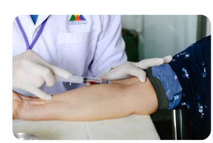

Trafalgar provides progressive, and affordable
healthcare, accessible on mobile and online
for everyone
Our services
We provide to you the best choiches for you. Adjust it to your health needs and make sure your undergo treatment with
our highly qualified doctors you can consult with us which type of service is suitable for your health
Search doctor
Choose your doctor from thousands of specialist, general, and trusted hospitals
Online pharmacy
Buy your medicines with our mobile application with a simple delivery system
Consultation
Free consultation with our trusted doctors and get the best recomendations
Details info
Free consultation with our trusted doctors and get the best recomendations
Emergency care
You can get 24/7 urgent care for yourself or your children and your
lovely family
Tracking
Track and save your medical history and health data
More Info
Leading healthcare providers
Trafalgar provides progressive, and affordable healthcare, accessible on mobile and online for everyone. To us, it’s not just work. We take pride
in the solutions we deliver
Check out our latest article

Disease detection, check
up in the laboratory
In this case, the role of the health laboratory is very important to do
a disease detection...
Herbal medicines that are
safe for consumption
Herbal medicine is very widely used at this time because of its very good for your health...
Natural care for healthy
facial skin
In this case, the role of the health laboratory is very important to do
a disease detection...